POE 642 · Casa E
100 objetos e variantes · 49 ambientes · 11 texturas de piso
Travertino Romano levigado
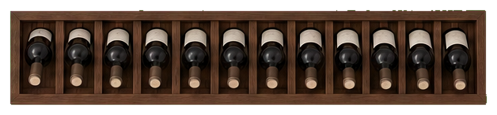
Granito marrom
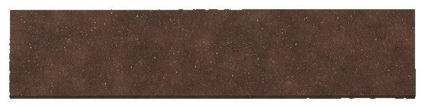
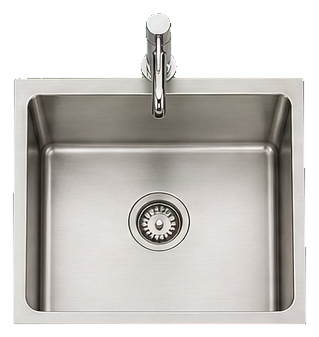
As bancadas, cubas, grelha, cooktop e banquetas são peças independentes.
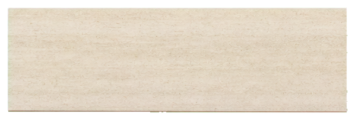
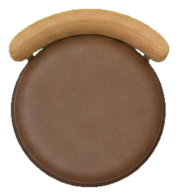
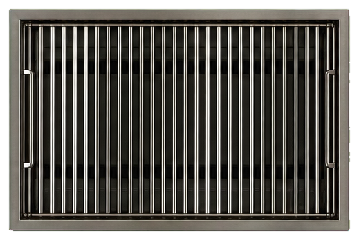
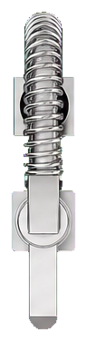
Mármore Bege Bahia fosco
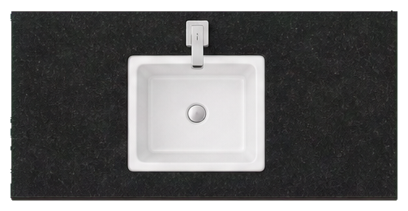
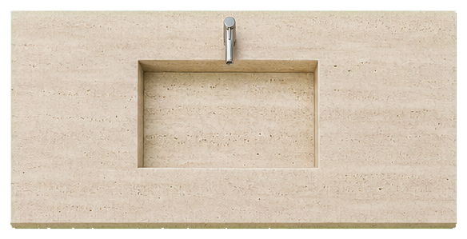
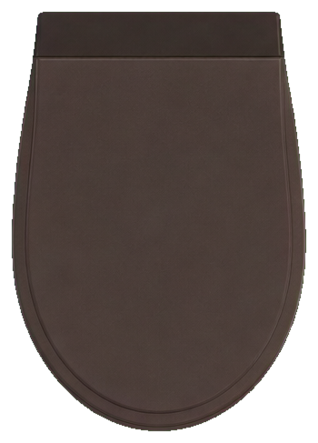
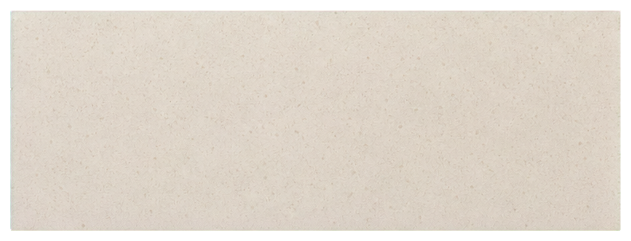
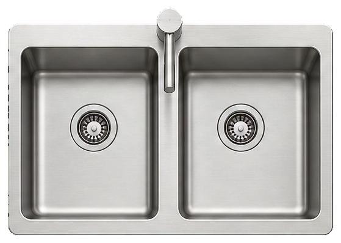
Bege Bahia para pisos externos
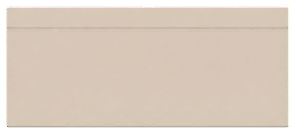
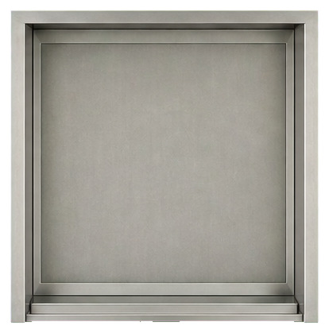
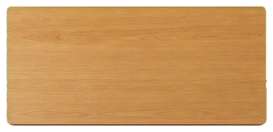
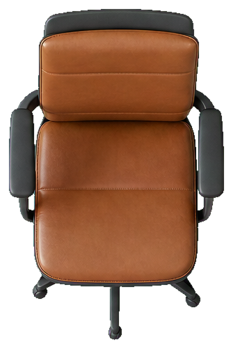
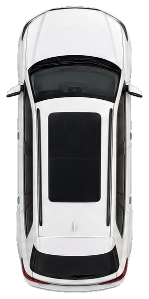
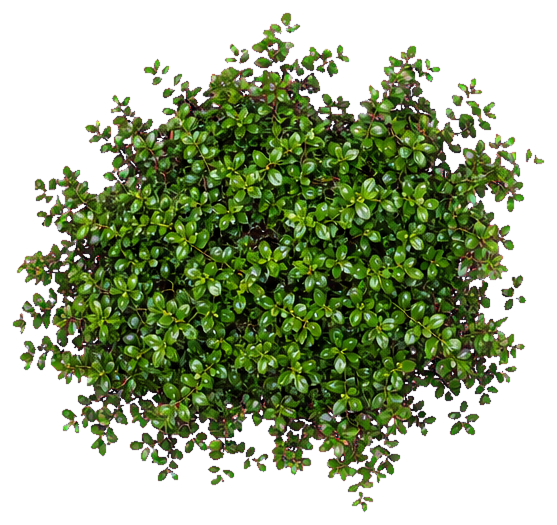
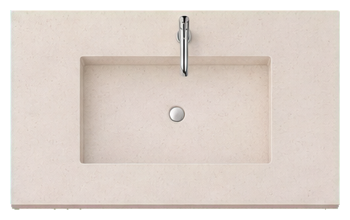
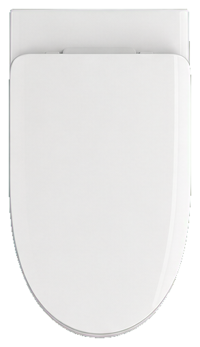
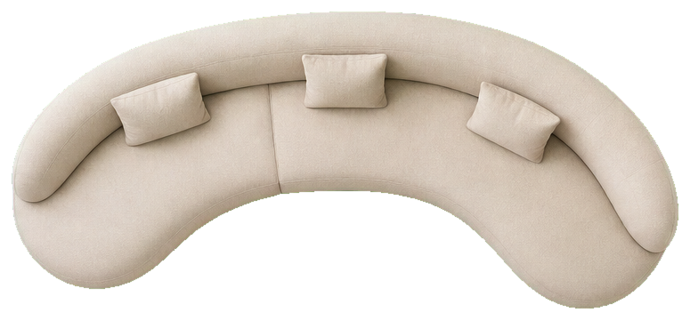
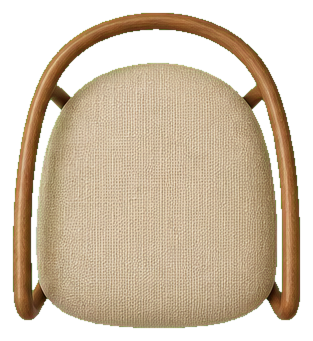
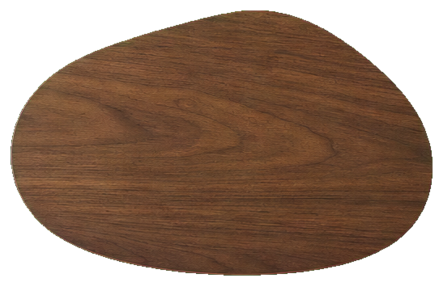
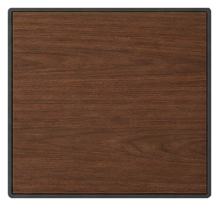
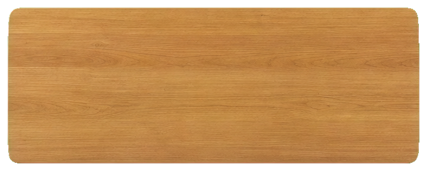
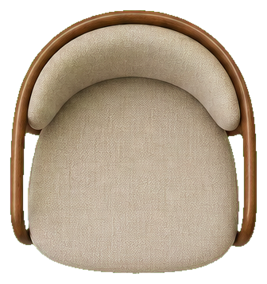
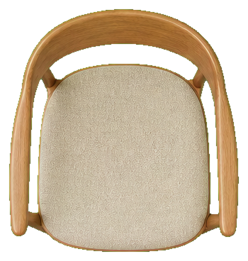
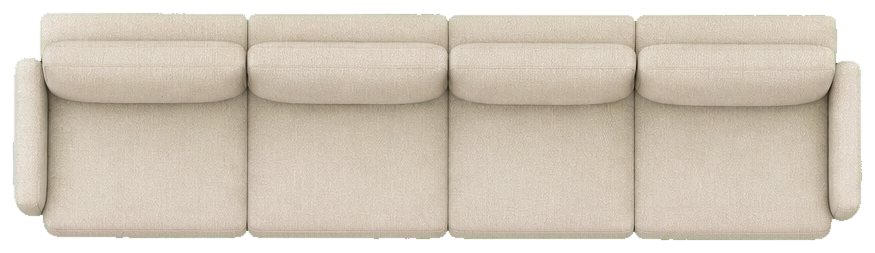
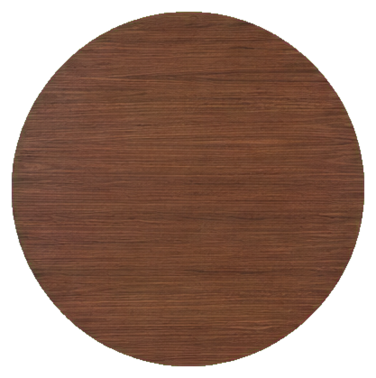
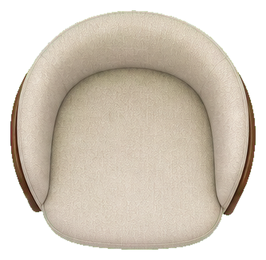
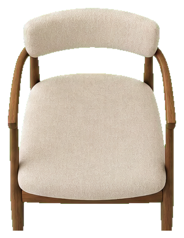
A planta mostra estação de cabos, bolas de exercício, esteiras, bicicletas e bancos. Siga a posição e a quantidade do PDF.
Vinílico Durafloor City Petra
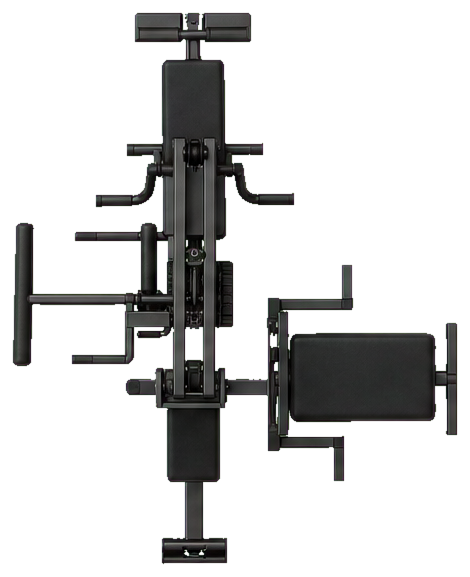
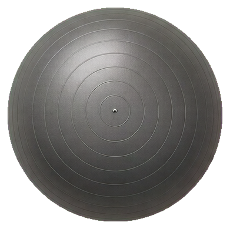
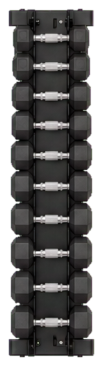
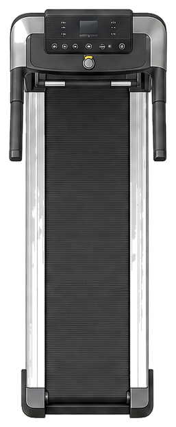
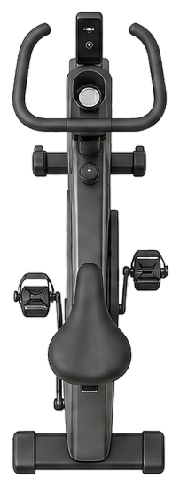
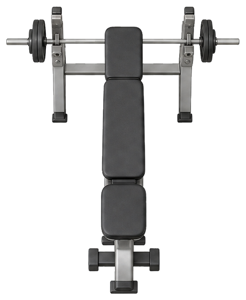
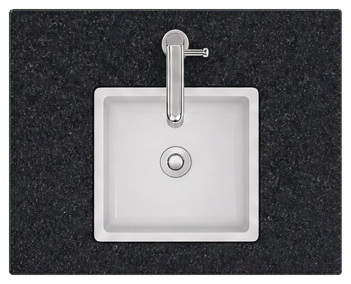
A prancha de banheiros indica banco reto de pedra e área molhada junto à piscina.
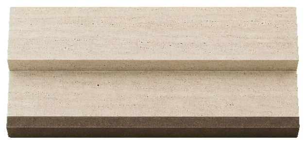
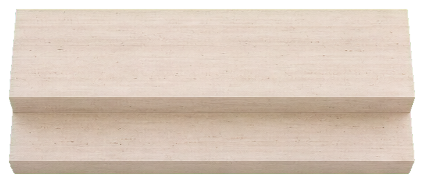
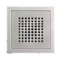
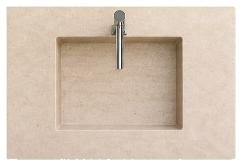
Priorize a bancada de uma cuba em quartzito Aura da apresentação de banheiros.
Travertino Romano claro dos banhos
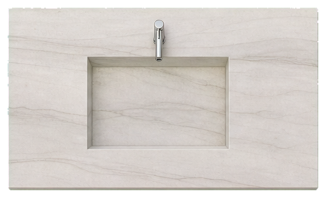
A banheira oval e a bancada dupla de quartzito Aura são peças independentes.
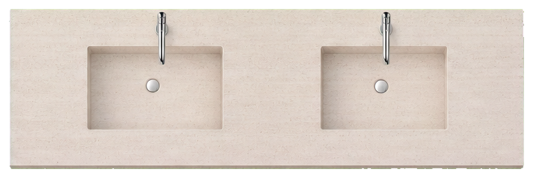
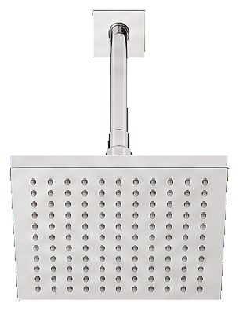
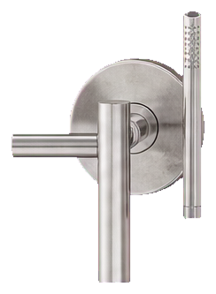
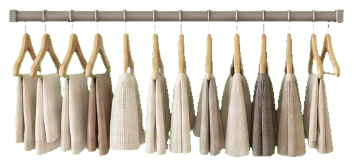
Use a extensão de cada trecho de armário conforme a prancha.
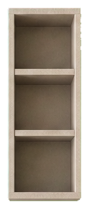
Posicione o sofá, as poltronas e o tapete dentro do ambiente desenhado.
Nenhum objeto ou material encontrado.